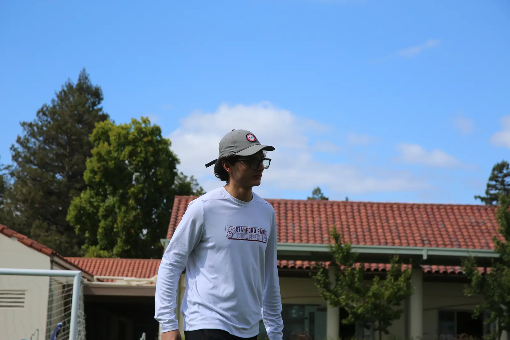
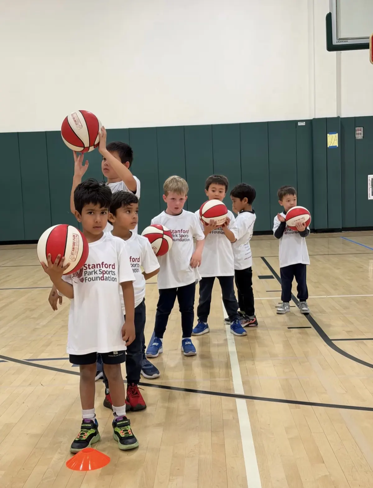
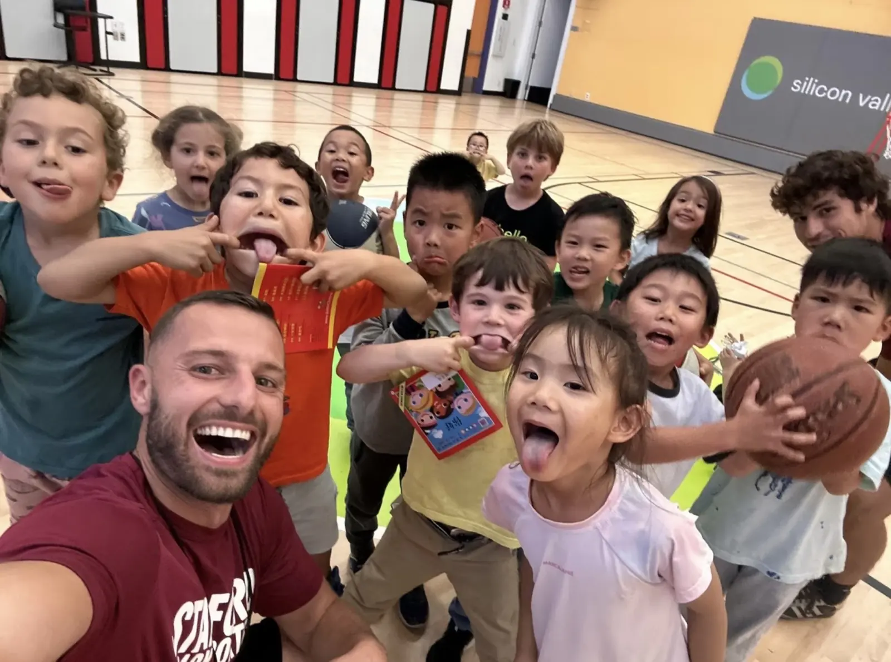

European-style coaching
Our coaching emphasizes fundamentals, discipline and pushing beyond comfort zones.
Since 2021, Stanford Park Sports has brought professional coaching directly onto school campuses across the Bay Area: after school, PE, recess, before school and camps.

Sports can change lives, and not just by creating athletes, but by building confident, disciplined and resilient young people.
Our founder, Petr Ropek, grew up in Prague, Czech Republic. Through soccer and later basketball, he learned early that discipline, hard work and accountability could open doors that financial resources could not. Those lessons earned him the opportunity to move to the United States to play college basketball, and shaped the person he would become.
After graduating, Petr founded Stanford Park Sports to deliver professional sports programs to schools across the Bay Area. When funding cuts eliminated programs at some local school districts, families from underserved communities lost something their children loved and relied on. Seeing that firsthand made the mission clear: access to high-quality sports training should not depend on income or opportunity. That led to the Stanford Park Sports Foundation, a registered 501(c)(3) nonprofit.
Today we partner with 50+ schools and serve 1,000+ students every week, from TK through high school and across all skill levels, including public schools, underserved schools, low-income families and juvenile programs.
We train athletes seriously, but we focus on development over winning, because character, confidence and resilience matter far more than the scoreboard.
Our coaching emphasizes fundamentals, discipline and pushing beyond comfort zones.
Every session builds skills, confidence, teamwork and positive habits, for every level of player.
For motivated athletes, higher-level SPS Academy programs offer serious training while still putting character first.



Our goal is to help young people succeed in life by teaching the values sports naturally develop.
Our vision: every child in the Bay Area and beyond has the opportunity to grow, compete and succeed through the power of sports.
Every format runs on or near your school campus, so getting kids moving never adds to a family’s commute.

Right after the final bell, on the school campus. Kids go straight from class to coach.

A done-for-you PE program with experienced coaches and age-based progressions.

Coach-led games during recess or lunch, so every break is an active one.

Get the wiggles out first thing, before the school day begins, on campus.

Full or half-day camps over summer, winter and holiday breaks.
Clinics, special events or something custom. Tell us what your school needs and we’ll build it.
Let’s talk
Through our nonprofit, the Stanford Park Sports Foundation, we offer scholarships and free programs to under-resourced families and schools. Our goal is to make sure every child can take part, whatever their financial circumstances.